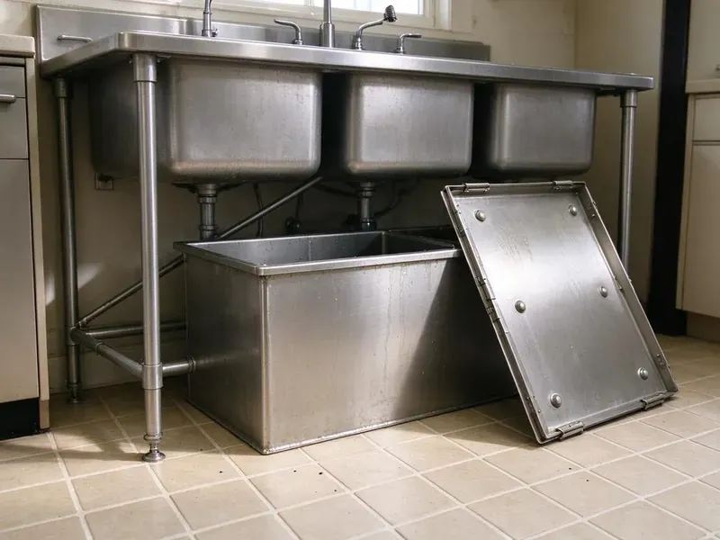

Insinkerator Installation in Beckley, WV
When you need professional Insinkerator installation in Beckley, WV, count on GJK Plumbing. We provide prompt, clean, and code-compliant service for your home.
- Experienced Plumbers
- Upfront pricing
- Guaranteed Work
- Expert, licensed plumbers

Get a quieter, stronger InSinkErator installed this week in Beckley, WV.
Call (681) 223-3607 and we will match the right InSinkErator model to your sink and household.
Your Go-To for Insinkerator Installation in Beckley, WV
GJK Plumbing specializes in professional Insinkerator installation, helping homeowners in Beckley, WV upgrade their kitchens. Whether you're replacing an old unit or adding a new one, we deliver a smooth, problem-free setup.
Our expertise includes:
- Dishwasher drain knockout removal and air gap connection
- Hardwired, plug-in and switch-mounted air button setups
- Testing for leaks and operational efficiency

Additional Kitchen Plumbing Services in Beckley, WV
Our kitchen plumbing services in Beckley, WV cover sinks, disposals, dishwashers, and grease traps so your kitchen keeps running without backups or leaks.


Customers
Why Choose GJK Plumbing for Insinkerator Installation in Beckley, WV?
Choosing GJK Plumbing for your Insinkerator installation means choosing reliability and professionalism. We focus on meticulous execution to prevent future issues and ensure your unit performs as expected.
- Right-Sized Motors, We recommend horsepower based on household size, cooking habits and whether you have a septic system.
- Clean Mounting, Every sink flange gets fresh plumber's putty or a gasket seal so the bowl never seeps.
- Code Compliance, We consistently install Insinkerator units according to current West Virginia plumbing and electrical codes, ensuring safety and legality.
Citywide Coverage
From downtown to the outer edges of Beckley, we provide complete Insinkerator installation services. Our local knowledge means we understand the plumbing needs of homes across the whole area.
Experienced Team
The GJK Plumbing team brings years of focused experience to every Insinkerator installation. We stay updated on the latest models and installation techniques, ensuring a professional job every time.
Safety-First Approach
Our plumbers check that the dishwasher drain has a proper air gap or high loop, which plumbing codes generally require to prevent backflow. We also seal all connections to keep water off the cabinet floor.
Trusted Certified Beckley Plumbing Services Professionals
At GJK Plumbing, we take pride in providing licensed, certified plumbing services throughout Beckley, WV. Backed by leading industry credentials, our experienced plumbers combine technical skill with genuine customer care. Whether it is repair, installation, or maintenance, we follow strict safety and quality standards to deliver long-lasting results you can trust.
Call Us Now PHCC Plumbing Contractor Recognition
PHCC Plumbing Contractor Recognition Better Business Bureau (BBB) Accreditation
Better Business Bureau (BBB) Accreditation Angi Certified Pro
Angi Certified Pro ISO 9001 Quality Management Certification
ISO 9001 Quality Management CertificationReliable Insinkerator Installation Services in Beckley, WV
Badger Series Disposal Installation in Beckley
The InSinkErator Badger line is the most common replacement disposal in local kitchens. These 1/3 to 3/4 HP units handle everyday scraps and fit most standard cabinets. We install the Badger with its quick-lock mount, attach the discharge tube and connect a cord kit if your old unit was plug-in. It is a low-cost choice for rentals, starter homes and light cooking households. Most Badger installs take around an hour.

Commercial Insinkerator Installation in Beckley, WV
Beyond residential services, GJK Plumbing also offers commercial Insinkerator installation for businesses in Beckley, WV. Commercial-grade disposals are built for heavier use and require dedicated plumbing and electrical setups. We install robust units designed to handle the demands of restaurants, cafes, and other food service establishments, ensuring compliance with commercial plumbing codes and minimizing disruption to your operations.
Hard Water and Mineral Considerations in Beckley
Testing well water every year or so is a good habit in West Virginia, especially after flooding or nearby ground disturbance. Hard water leaves scale on disposal grind rings, sink flanges and drain tailpieces. Over time that buildup can make a disposal noisy and cause slow drainage. We inspect the drain line for scale and debris before connecting a new unit. If heavy buildup is present, we recommend cleaning or replacing the trap and tailpiece at the same time. Stainless steel grind components on Evolution models resist corrosion better in hard water.
Replacement of Existing Garbage Disposals in Beckley
If your current garbage disposal in Beckley is failing, we provide prompt replacement services, often with an Insinkerator unit. We begin by safely disconnecting and removing the old disposal, carefully cleaning the sink flange area to prepare for the new installation. Our team then installs your chosen Insinkerator model, making all needed electrical and plumbing adjustments. We ensure the new unit integrates cleanly with your existing sink and drainage system, preventing future issues.
InSinkErator Installation Cost Comparison in Beckley, WV
A basic Badger 5 install with a cord kit usually costs less than a premium Evolution Excel installation. Labor is similar for most swaps, but first-time installs cost more because of new flange work and electrical runs. We give you an upfront price that includes the unit, labor and haul-away. We also compare horsepower, sound levels and warranty length side by side. That way you can choose the model that fits your budget and cooking habits.
Evolution Series Upgrades in Beckley, WV
Evolution models like the Compact, Septic Assist and Excel use multi-stage grinding and extra sound insulation. They break down fibrous foods such as celery and corn husks that can jam lighter units. We install Evolution disposals for families who cook often and want a quieter kitchen. Because these units are taller and heavier, we check cabinet clearance and trap height before we mount them. The result is a smoother grind and fewer clogs down the line.
Dishwasher Connection and Air Gap Setup in Beckley
Most InSinkErator units have a dishwasher inlet with a factory knockout plug inside. We knock that plug out, clear the debris and connect the dishwasher drain hose with a proper clamp. We then install or verify an air gap or high loop so dirty sink water cannot siphon back into the dishwasher. Forgetting the knockout is one of the most common DIY mistakes and leads to a dishwasher that will not drain. We test both appliances together before we go.

Septic-Friendly Disposal Installs in Beckley, WV
Homes on septic systems need a disposal that does not overload the tank. Septic systems and private wells are common across rural West Virginia, where many homes are far from city sewer and water lines. InSinkErator's Septic Assist model injects an enzyme solution to help break down food waste. We install the unit, mount the enzyme cartridge and explain how often to replace it. We also talk through scraping habits that keep solids out of the tank. This helps protect your drain field and extends time between pump-outs.
Insinkerator Installation Near Me in Beckley, WV
When you need an InSinkErator installed quickly, our local plumbers can be at your door soon. We stock popular Badger and Evolution models so you do not have to wait for a special order. Most installs are wrapped up the same day you call.
Our technicians live and work in the area and know the kitchen layouts common to local homes. They arrive with the mounting hardware, cord kits and drain fittings the job needs. You get a professional install without the hassle of a big-box store appointment.
GJK Plumbing at a Glance
- Fully licensed plumbing team covering Beckley, WV
- Same-day appointments and 24/7 emergency response
- Upfront, flat-rate pricing before work begins
- 4.8-star rated by 832+ West Virginia customers
Beckley Map
Beckley Information
- Population
- 16,576
- Area codes
- Local
- Service area
- Beckley and communities within 40 miles
- Nearby
- Oak Hill, Princeton, Bluefield, Charleston
Mineral buildup and older drain lines in many homes make a properly sized and correctly mounted InSinkErator essential for avoiding scale, clogs and leaks under the sink.
Expert Services
Trust our professionals for reliable GJK Plumbing solutions in Beckley, WV.
Our Specialized Plumbing Services in Beckley, WV
At GJK Plumbing, we provide a complete range of plumbing services across Beckley, WV. From leak detection to full system installations, our team ensures fast, precise, and affordable service for both residential and commercial properties. Explore our core services below:


How Our Insinkerator Installation Process Works in Beckley, WV
Our Insinkerator installation process is simple and designed for your convenience. We deliver a professional and efficient setup from start to finish.
Request a Quote
Call (681) 223-3607 and tell us about your sink and current disposal, if any. We will recommend a model and give you a clear price before we arrive.
Mount and Connect
Our plumber removes the old unit, installs the new sink flange and mount, and connects the drain and dishwasher lines. We also make the electrical connection with a cord kit or hardwire.
Test and Clean Up
We run water, grind a test load and check every joint for leaks. Then we clean the cabinet, haul away the old unit and show you how to use the reset button and hex key.
Frequently Asked Questions About Insinkerator Installation in Beckley
The cost for Insinkerator installation in Beckley, WV typically ranges from $200 to $600, depending on the model chosen and any necessary plumbing or electrical modifications. This price usually includes labor and basic materials, but the disposal unit itself is a separate cost ranging from $100 to $400 for residential models. We provide a detailed quote before any work begins.
We install all popular Insinkerator models, including the Badger series (Badger 1, 5), the Evolution series (Essential, Compact, Excel), and other specialized units. Our plumbers are trained to handle various sizes and power levels to match your kitchen's needs.
While some homeowners attempt DIY installation, it's often best left to professionals. Improper installation can lead to leaks, electrical hazards, or damage to the unit or your plumbing. Professional installation ensures safety, proper function, and adherence to local codes.
Yes, as long as you choose the right model and avoid overloading it. The InSinkErator Evolution Septic Assist is designed for septic homes and injects enzymes to help break down waste.
Many homeowners can swap a disposal, but common mistakes include leaving the dishwasher knockout in place, poor flange seals and unsafe wiring. A professional install prevents leaks, tripped breakers and water damage to the cabinet.
GJK Plumbing provides a warranty on all our labor for Insinkerator installations, usually covering the work for a specified period. The Insinkerator unit itself will come with its manufacturer's warranty, which varies by model. We stand by the quality of our workmanship.
For light use, a Badger 5 or Badger 5XP works well. Families who cook a lot or want a quieter unit should consider an Evolution Compact or Excel. Homes on septic should consider the Evolution Septic Assist.
Signs that your old disposal needs replacing include frequent clogging, persistent leaks from the unit's body, unusual grinding noises, or complete failure to turn on. If repairs are becoming costly or frequent, replacement is often the more economical choice.
What People Are Saying About Our Plumbing Experts?

Patricia H.
We had a slab leak that two other companies could not find. GJK Plumbing located it in under an hour, explained our options, and the price matched the quote to the dollar.
Slab Leak Repair · South Charleston, WV
Sofia M.
Two new toilets installed in one visit, no mess left behind, and the tech even adjusted a faucet he noticed was dripping. Fair pricing and really friendly.
Toilet Installation · Beckley, WVLaura S.
I scheduled a water heater replacement, and the team made the process smooth and affordable. The new unit works perfectly, and they cleaned up after completing the job.
Water Heater Replacement · Dunbar, WV
Mark T.
When our office needed drain cleaning, GJK Plumbing provided quick, reliable service. The plumber arrived on time and made sure every drain flowed perfectly before leaving. Very satisfied.
Drain Cleaning · Bluefield, WV
Daniel K.
A pipe burst at 11 pm and they actually answered. The plumber showed up within the hour, shut everything down, and had us back to normal the next morning. Could not ask for more.
Emergency Plumbing · Charleston, WV
Robert G.
The trenchless sewer replacement saved our front yard. They walked us through the camera inspection footage first so we knew exactly what we were paying for.
Sewer Line Replacement · Charleston, WV